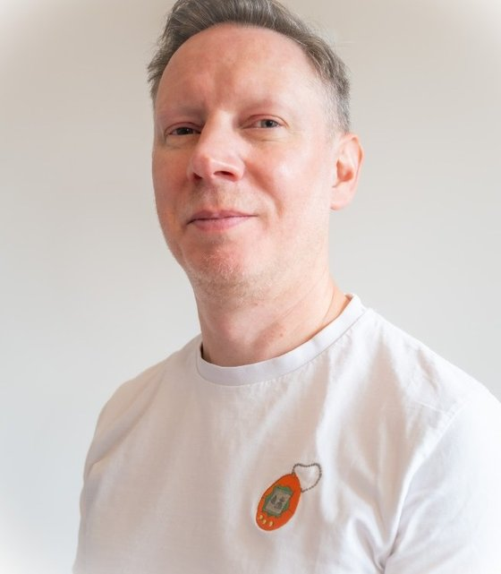

I mentor young people who are curious about AI, technology and starting things of their own. Learning how AI works is the starting point. The lessons that stay with them come later: putting something in front of real users, looking after those users, and learning from what happens next. I bring three years of teaching children in Japanese schools, twenty years of taking products to real users, and a background in privacy and user safety at Google and Bumble.

I taught for three years in elementary and junior high schools in Shiga, Japan, including special needs classes. That is where I learned what keeps children of this age motivated, what makes them switch off, and how to explain a difficult idea without talking down to anyone.
For twenty years my job has been getting products out of the building and into people's hands: a new-to-market app at Soho House, privacy features in Google Chrome, and AI pilots running on real data. The same discipline is taught here, at a smaller scale.
I led privacy for Google Chrome and product safety at Bumble. A young builder learns to protect their own data and their users' data, and to ask who could be harmed by what they make before it launches, instead of afterwards.
Building a working demo with an AI tool is now an afternoon's work. Understanding how AI works, and using the tools well, is covered by most courses. The harder and more valuable lessons start afterwards: when real people use what you have made, when something breaks, and when you are responsible for other people's data.
How AI works, in plain terms.
Getting good results from AI tools.
A working prototype.
Real users, real feedback, a launch.
Privacy, safety, looking after users.
The last two rungs are where product development, marketing, project management and responsibility are actually learned, because they stop being theory. They are also the rungs I have spent my career on.
The programme follows the same five-stage method I use with businesses, sized for a young builder of roughly 11 to 16. Each stage ends with something tangible, and each one adds a safety habit. It is shaped around the student's own interests, so choose a track to see how it changes.
A sample only. The pace, projects and balance between building, marketing and business are agreed with the student and family at the start, and revisited at the end of each stage.
With businesses, I spend a good deal of time on AI governance: who can see the data, what a system is allowed to do, and who is accountable when something goes wrong. The same questions apply to a young person's first app, in simpler words. Most young builders are never asked them, and they are far easier to learn early than to unlearn later.
What should never be typed into an AI tool, how to check a tool's privacy settings, and why 'free' usually means the user is paying some other way.
Many AI tools set minimum ages in their terms of use. Tools and accounts are chosen and set up with parents, and parents can see what is being used and why.
Collect the minimum, keep it safe and delete it when it is no longer needed. In the UK, services likely to be used by children must follow the ICO's Children's Code, which is a useful checklist in its own right.
AI tools can be confidently wrong, and can be steered by text hidden in what they read. So their work is checked, and nothing important is left to them unsupervised.
A simplified version of the risk check I use with businesses. Tick what applies to the project.
Mostly online, and scheduled around the school timetable and term dates. Occasional in-person sessions are arranged where they help, for a launch or a demo day, for instance.
A short written update at the end of each stage: what was learned, what was made, and what comes next. Parents are invited to the end-of-programme demo.
The aim is a student who can research, plan and solve problems on their own. Support is stepped back as confidence grows, which is also how autonomy is handed to AI systems in business.
I am happy to undergo enhanced background checks, and to agree ground rules for online sessions with the family at the outset.
Email is the best way to reach me. I am happy to talk through what a programme could look like for a particular student, and I read and reply to email myself, usually within a day.